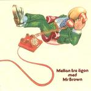

Home Artist links Label link

Mr Brown - Mellan Tre Ogon
| Artist: | Mr Brown |
| Title: | Mellan Tre Ogon |
| Label: | Transubstans Trans015 |
| Length(s): | 40 minutes |
| Year(s) of release: | 1977/2005 |
| Month of review: | [03/2006] |
Line up
Hakan Andersson - acoustic guitar, mandolin, vocals
Bo Carlberg - guitars
Kjell Johnsson - drums
Lars Mesling - lead guitar
Anders Nilsson - assorted key instruments
Jan Peter Stralde - flute
Robert Svensson - bass
Tracks
| 1) | Suicide | 6.54
|
| 2) | Recall The Future | 9.29
|
| 3) | Resan Till Ixtlan | 3.25
|
| 4) | Universe | 3.39
|
| 5) | Kharma 74 | 5.52
|
| 6) | Liv I Stad Utan Liv | 7.00
|
| 7) | Tornet | 0.57
|
| 8) | I'll Arise | 2.39
|
Summary
The music
This 1977 released album is now re-released for the first time on CD. Suicide is characterized by lush Hammond and sax sounds. In the back we hear the sort of spacy float sounds we also heard with Eloy. This is probably the most progressive track on the disc. We also hear grand piano and flute, bringing in a semblance with the Dutch classically oriented prog outfits, Focus being the most important. Having said that, the piano at other times takes on a cheesy air or a style that is very happy. Less befitting of progressive. Recall The Future in all its length is an example of this effect, but it cannot begin to tell the amount of cheese in Resan Till Ixtlan.
The vocals are laid back, and somewhere inbetween those heard with Camel and Caravan. They are also a bit sparse. Which is a pitty, since the vocal tracks Suicide and Liv I Stad Utan Live are the best of the album. I'll Arise, another vocal track, turned out a bit flat.
The majority of tracks has a happy demeanor with fast paced piano and at times flute. Without wanting to call the music folky, it is that more so than it is overly progressive. I guess you could compare it to Camel's Snow Goose in a way: lots of flute and piano in a happy atmosphere.
The artwork is just the basic LP stuff scaled down. This results in badly legible sleeve notes. Those with poorer eyes will in all likelihood be unable to read it. It took my near 20/20 vision a bit of trouble already.
Conclusion
Mr Brown did some pretty good vocal progressive tracks, but part of their instrumentals lean towards the cheesy (although those into The Snow Goose might enjoy them after all. Never liked that one much either). Despite not quite being the majority of the music on the disc, there is a bit too much cheese. This results in an album I can't feel much enthusiasm about, despite the stronger tracks.
© Roberto Lambooy